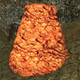
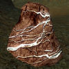

Эвендим
 Ненуиал — «Вечернее Озеро», более известное как Эвендим. Именно близ Эвендима тысячи лет назад жили нолдор-изгнанники и именно в этих землях располагалась, возвышаясь над озером, древняя столица Королевства Арнор — возведенный самим Элендилем Аннуминас.
Именно там хранился один из Видящих Камней, покуда Арнор не распался, а Короли не остались в одном лишь Форност-Эрайне. Теперь они и вовсе сгинули, нет больше Короля ни на Западе, ни в Гондоре, а Палантиры давно утрачены. Ныне предместья и большая часть столицы затоплена могучей Гвиндет, хранительницей Озера, из великой любви к Элендилю, а сокровища и реликвии людей на долгие годы сокрыты под толщей лазурных вод.
Ненуиал — «Вечернее Озеро», более известное как Эвендим. Именно близ Эвендима тысячи лет назад жили нолдор-изгнанники и именно в этих землях располагалась, возвышаясь над озером, древняя столица Королевства Арнор — возведенный самим Элендилем Аннуминас.
Именно там хранился один из Видящих Камней, покуда Арнор не распался, а Короли не остались в одном лишь Форност-Эрайне. Теперь они и вовсе сгинули, нет больше Короля ни на Западе, ни в Гондоре, а Палантиры давно утрачены. Ныне предместья и большая часть столицы затоплена могучей Гвиндет, хранительницей Озера, из великой любви к Элендилю, а сокровища и реликвии людей на долгие годы сокрыты под толщей лазурных вод.
Встречаемые ресурсы:
- Древесина
- Тис


- Лебетрон
- Руды
- Обогащённое железо
- Золото

- Гномье железо
- Платина
Ссылка на интерактивную карту локации:
Вернуться к карте